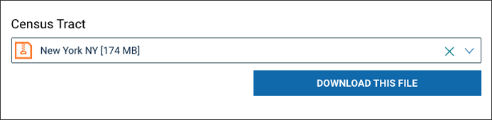
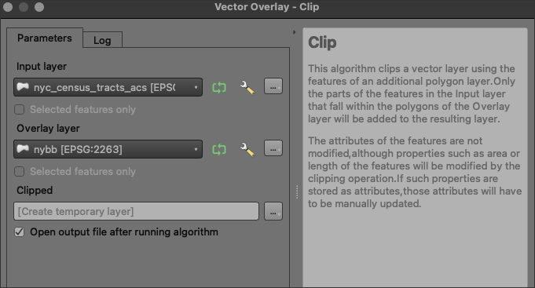
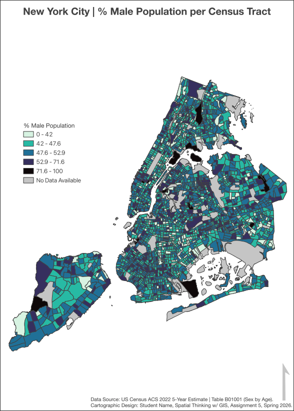

Class 5 Assignment: Thematic Map Design - Choropleth Mapping w/ US Census Data
Spring 2026 | UENV 3200 - CRN 11009 + UURB 3210 - CRN 111008
🗺️ Assignment 5 - Thematic Mapping with ACS Rates (NYC Census Tracts)
Class 5 Recorded Lecture (named Lecture 4):
Before proceeding with assignment steps below, review the lecture recording for an overview of this week’s concepts and themes.
Class 5 Assignment 5 Readings
The following reading is a good resource to understanding all the specifics of the ACS across the dimensions discussed in the lecture - spatial, temporal and demographic details of the survey. This document is located as follows; the 10 question quiz next week will be limited to the following sections:
- Understanding the ACS: The Basics ……………………………… 1
- Geographic Areas Covered in the ACS ……………………………. 8
- Understanding and Using ACS Single-Year and Multiyear Estimates ……. 13
🧭 Assignment 5 Context
This assignment builds on our work with:
- Choropleth mapping principles (rates vs. raw counts)
- Attribute joins + field calculations in QGIS
- Classification methods (Natural Breaks, Quantile, Equal Interval, etc.)
This assignment asks you to choose a theme, compute a population rate (%) at the census tract level, and produce a publication-ready NYC map.
🧰 Assignment Data (NYC + US Census)
NYC Study Area
- Geography: NYC census tracts (all five boroughs)
- Unit of analysis: Census tract
- Extent: Bronx, Brooklyn, Manhattan, Queens, Staten Island - all 5 boroughs
Census Attribute Data
Use the American Community Survey (ACS) 5-year tables. - You must select one numerator field (a count) and the correct universe/denominator field (a count). - You will compute a rate (%) prior to classification.
✅ Rule: Do not map raw counts. Choropleths must represent rates, ratios, or densities.
🧪 Method Overview (Steps Overview)
- Load NYC census tract polygons.
- Obtain ACS table data for tracts (NYC only). Prepare table (drop unnecessary fields).
- Join ACS attributes to tracts using a shared GEOID.
- Compute a rate (%) field:
- rate_pct = (numerator / denominator) * 100
- Classify the rate (%) field and design a choropleth map.
- Design for
NA‘missingness values’. - Export a final print layout PDF.
🧱 Part I — Project setup & folder structure
Create a clean folder structure:
assignment_5_nyc_acs_rate/data_raw/data_processed/qgis_project/exports/
Save your QGIS project file in qgis_project/.
🧾 Part II - Acquire and load necessary geometries & tabular data
First navigate to the US Census TIGER/Line with Selected Demographic and Economic Data. This allows access to the 5-year 2022 ‘bundled’ product at the state level in geodatabase format.
Next, navigate to the tab Census Tract > Select a State > New York NY (174MB) and download the
ACS_2022_5YR_TRACT_36.gdb.zip. Proceed to extracting this.zipand access the.gdbfrom within QGIS.

Load the NYC tract polygons + the correct table for your theme universe. In the example below, we are using B01001 (Sex by Age) which comes from the bundled table name
ACS_2022_5YR_TRACT_36_NEW_YORK — X01_AGE_AND_SEX. You must load both the geometry and your correct, intended table:- Load NYC census tracts into QGIS.
- Load ACS_2022_5YR_TRACT_36_NEW_YORK - NAMED TABLE HERE
✅ CRS requirement
- Use a projected CRS appropriate for NYC mapping **at the project - not layer - level.
- EPSG:2263 (NAD83 / NY Long Island ftUS) recommended for NYC cartography
- When you initially load your features, you will see the CRS is other than EPSG:2263; revise accordingly before proceeding.

🔗 Part III — Add ACS attributes + join + prepare 5 borough subset
- Bring ACS attributes in as a table (CSV) or a layer/table from the geodatabase.
- Prepare and optimize the table; Create valid join.
- Select 5 boroughs alone and export.
Prepare: - Load your ACS table to QGIS and immediately isolate your chosen theme denominator and nominator values (total population and subset theme population counts). - Also isolate your table tract identifier (often GEOID, GEO_ID, GEOIDFQ or similar).
- Utilize the Drop Fields Tool to generate a new, temporary join table with all unnecessary and unused fields removed.
Join requirements
- Your tract layer must have a tract GEOID (often
GEOID,GEOID10,GEOID20,GEOIDFQ) - Your ACS table must contain the matching tract identifier (often
GEOID,GEO_ID,GEOIDFQ, or similar) - Make sure the format of both GEOIDs in the tract geometry and in the ACS table match in format (they should both be strings that include ‘US’ in them).
Perform: Layer Properties → Joins → Add Join - Join field (tracts): GEOIDFQ - Join field (ACS table): GEOIDFQ
Confirm fields appear in the tract attribute table.
Utilize the temporary join table with unnecessary fields dropped (named remaining fields), not the original ACS table. If you get the ‘spinning ball of death’ assuming you are on macOS, you’ve picked the original, uncut tabular data and you are best off force quitting and starting over with remaining fields.
Select: NYC Census Tracts (5 Boroughs) and Export
- This workflow assumes:
- You have NY State census tract geometry loaded.
- Your ACS table is already joined.
- The tract layer contains a
COUNTYFPfield.
| Borough | County Name | COUNTYFP |
|---|---|---|
| Manhattan | New York County | 061 |
| Brooklyn | Kings County | 047 |
| Queens | Queens County | 081 |
| The Bronx | Bronx County | 005 |
| Staten Island | Richmond County | 085 |
✅ Step 1 — Open Select by Expression
- Select the joined NYS census tract layer
- Go to Select → Select By Expression…
✅ Step 2 — Use this selection expression
Paste the following into the expression window:
"COUNTYFP" IN ('005','047','061','081','085')✅ Step 3 — Verify selection
Click Select Features
Confirm that only NYC tracts (all five boroughs) are highlighted
✅ Step 4 — Export selected features
Right-click the tract layer → Export → Save Features As…
Format: ESRI Shapefile
File name:
nyc_census_tracts_acs.shpCRS: keep current project CRS at the layer level (only operate EPSG:2263 at the project level, not the layer level).
Check: Save only selected features
Click OK
🎯 Result
You now have a NYC-only census tract shapefile containing:
- All five boroughs
- Joined ACS attributes
- No non-NYC NY State tracts
This layer will be used for rate calculation, classification, and final mapping starting first in Part IV to follow:
🧮 Part IV — Compute your population rate (%) (required)
You must compute a rate (%) field in the census tract layer before applying any map classification.
Choropleth maps in this assignment may not display raw counts.
🧾 Create a new field
Use Field Calculator in QGIS with the following settings:
- Output field name:
rate_pct - Output field type: Decimal (real)
📊 Rate definition
All rates must be calculated as:
rate (%) = (numerator ÷ denominator) × 100
🚫 Required handling of missing data (NA)
Census data frequently includes suppressed, unavailable, or undefined values.
If a census tract has: - a denominator equal to 0 - NULL / NA values in the numerator or denominator
→ this condition must be interpreted as no data available, not a true zero.
Required behavior: - These tracts must evaluate to NULL (NA) in the calculated rate field. - They must not be included in any classification method. - They may be symbolized separately in the final map (e.g., light gray labeled No data).
🧮 Field Calculator expression (required)
Use this exact logic structure (field names will differ):
CASE
WHEN "DENOMINATOR_FIELD" IS NULL
OR "NUMERATOR_FIELD" IS NULL
OR "DENOMINATOR_FIELD" = 0
THEN NULL
ELSE ("NUMERATOR_FIELD" / "DENOMINATOR_FIELD") * 100
END🔍 Data hygiene rules
- Numerator and denominator must come from the same ACS universe (e.g., total population, population 16+, housing units, occupied units - these are all different universes)
- Missing or suppressed census values must not be folded into classification bins
- Zero values should only appear where the census explicitly reports a true zero
✅ Example Theme (Demonstration Lab Example)
This example uses ACS table B01001 (Sex by Age): - Total population: B01001_E001 - Male population: B01001_E002
- Field Calculator expression compact version:
CASE
WHEN "B01001_E001" = 0
THEN NULL
ELSE ("B01001_E002" / "B01001_E001") * 100
END- Field Calculator expression expanded (robust) version:
CASE
WHEN "B01001_E001" IS NULL
OR "B01001_E002" IS NULL
OR "B01001_E001" = 0
THEN NULL
ELSE ("B01001_E002" / "B01001_E001") * 100
ENDAs remaining fields was the join table, QGIS will typically rename the original fields as Remaining, Remainin_1, Remainin_2, ect. The same field positions remain; however, changes to naming conventions can/will occur. In our example here, B01001_E001 becomes Remainin_1 and B01001_E002 becomes Remainin_2.
Name the output field: pct_male
Students: your variable will differ. Your job is to (1) pick a theme, (2) identify numerator + denominator fields correctly, (3) compute the rate (%), then (4) classify and map.
🎨 Part V — Cut to Shoreline + Style NULL (No data) tracts (required)
After computing your rate (%), some census tracts will have NULL (NA) values.
These represent no data available and must be styled separately.
Before proceeding, make sure to Toggle Editing > Save to save your table edits before proceeding to map symbology. You will know when you are in an active editing session: you will see bright yellow features on the map with red/orange hash marks. You will also notice a pencil icon atop the layer icons in the layers panel. Again, these are signs that you need to first Toggle Editing > Save the layer.
To start, download the local NYC Shoreline Polygon Feature. Utilize this feature to cut the geometry to the shoreline for a clean concise appearance:
Unzip and place into your QGIS project.
Utilize the QGIS Clip Tool to ‘clip’ the US Census boundaries to the local borough shoreline:

Proceed with the resulting Clipped layer result to symbology below. You should notice a difference between the ‘uncut’ and ‘cut’ versions of the US Census Tract geometries wherby the ‘cut’ version looks clean and tailiored to the correct shoreline shape of NYC boroughs.
✅ Use the default Graduated symbology workflow
- Open Layer Properties → Symbology
- Set Renderer:
Graduated - Set Value: your rate field (e.g.,
rate_pct) - Choose your classification method and number of classes
- Click Classify
- Load the original
nybbunderneath the workingClippedLayer; symbolize this layer a neutral grey.
🎯 Required outcome
- NULL tracts are not included in classification bins
- NULL tracts appear a neutral gray on the map
- The legend includes a clear No data entry
🎚️ Part VI — Choropleth classification (deliberate choice required)
Style the tract layer using Graduated symbology based on your rate field.
Minimum requirements: - Classification mode: Graduated - Value: your computed field (e.g., rate_pct, pct_male) - Classes: 5 (unless you justify another number) - Method: your choice (Natural Breaks, Quantile, Equal Interval, etc.)
Required reflection (submission notes placed into Canvas along with PDF upload)
In your submission notes, justify: - Why you chose your classification method - One tradeoff you observed (e.g., skew, outliers, legibility, interpretability)
🖨️ Part VII — Map layout + export
Create a Print Layout and export a final PDF.
Required map elements
- Title (specific and meaningful)
- Legend (units must indicate %)
- Scale bar
- North arrow (optional if your design supports it)
- Data source note (ACS table + year range)
- Author name + course + date
🖨️ Export settings
Your preferred export format is PDF.
- Format: PDF
- Page size: 8.5 × 11
- 11 × 17 is permitted only if clearly justified by map complexity
- 11 × 17 is permitted only if clearly justified by map complexity
- Resolution: 300 DPI
📦 If your PDF file size is too large
If your exported PDF becomes too large to upload from QGIS or to Canvas, you may export a high-resolution raster image instead.
Accepted alternatives: - PNG (preferred) - JPEG (acceptable if file size is constrained)
Raster export requirements: - Minimum resolution: 300 DPI
- Dimensions: Must match your intended page size (8.5 × 11 or 11 × 17)
- Quality: Text, legend, and labels must remain fully legible at 100% zoom
Note: File size issues are usually caused by embedded vector complexity or excessive symbology in the PDF option. Switching to PNG or JPEG is an acceptable workaround and will not reduce your grade.
📤 Submission
Submit to Canvas:
- One PDF map
- 3–6 bullet submission notes in a simple
.txtformat that includes:- Theme + numerator/denominator fields used
- Your exact rate equation (in words or formula)
- Classification method + why you chose it
- One cartographic design decision you made intentionally
🗺️ Assignment 5 - Map Submission Example

📄 NYC ACS Rate Map Submission Requirement
- In addition to your final map, you must submit 3–6 bullet submission notes in a simple
.txtfile.
This document is used to evaluate methodological understanding and decision-making.
🧾 Required .txt Submission Notes (graded)
Your .txt file must include 3–6 bullet points covering:
- Your theme and the numerator / denominator fields used
- Your exact rate equation (written in words or as a formula)
- Your classification method and why you chose it
- One intentional cartographic design decision you made
The file must be: - Plain text (.txt) - Clearly written - Aligned with the map you submitted
🧮 Grading Rubric
| Criteria | Excellent (100) | Good (90) |
|---|---|---|
| 🧾 Data & CRS Handling (15%) | Correct NYC census tract geography; appropriate and consistent CRS | Minor CRS or extent issues that do not distort the map |
| 🔗 Join Integrity (15%) | ACS attributes correctly joined using tract GEOID; fields verified | Join works but verification is weak or partially incorrect |
| 🧮 Rate Calculation & Missingness (25%) | Correct numerator/denominator; proper % calculation; NA/missingness handled correctly | Rate calculated but minor issues with NA handling or denominator logic |
| 🎚️ Classification & Legend (20%) | Classification method is well chosen and justified; legend clearly communicates % and No data | Classification works but justification or legend clarity could improve |
📝 Submission Notes (.txt) (10%) |
Notes are complete, clear, and accurately describe methods and decisions | Notes present but vague or partially incomplete |
| 🎨 Layout & Communication (15%) | Strong visual hierarchy; clean, readable, publication-ready layout | Functional layout with minor clarity issues |
⚠️ Reminder
- Missing or incorrect
.txtsubmission notes will result in point deductions - The
.txtfile must reflect what was actually done in the map - Methodological inconsistencies between the map and notes will be graded accordingly